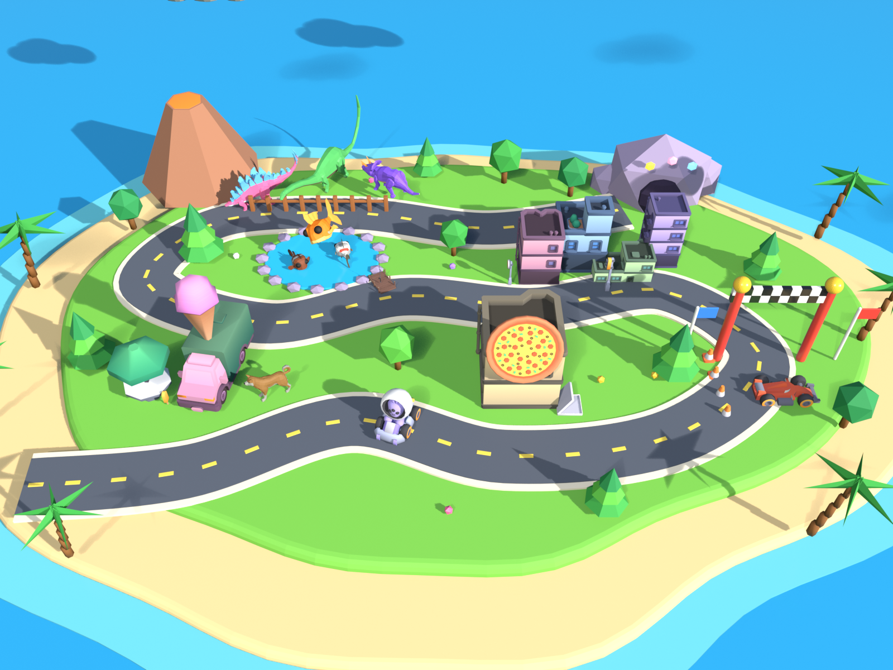
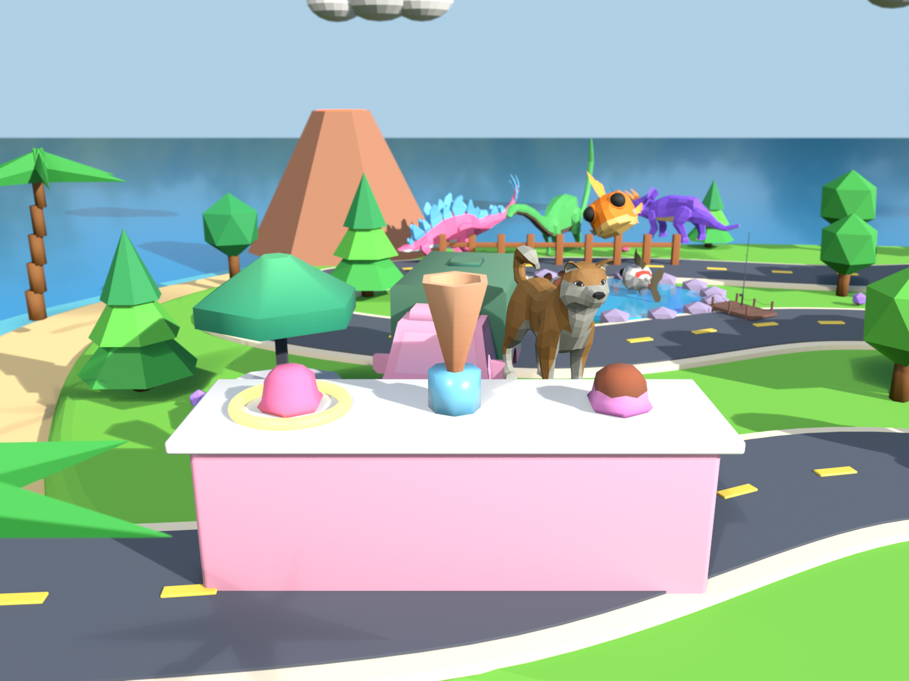

Render bằng Blender với mô hình Kenney + Quaternius (CC0) và ánh sáng Poly Haven: kiểu đồ chơi low-poly, màu pastel tươi. Đây là bản mẫu để định hướng hình ảnh, không phải hình cuối cùng. Nút bấm và gợi ý là lớp giao diện đặt chồng lên ảnh.

Bảy trạm nằm trong cảnh: xe kem hồng (chó Shiba bán), tiệm pizza, đường đua (cổng caro, xe đua, cọc tiêu), hồ câu cá, thị trấn "Chạm là nói", công viên khủng long cạnh núi lửa, và hang "Tìm bóng". Chiếc kart có bạn nhỏ lái là xe của bé, sẽ chạy tới trạm bé chạm vào. Trạm được mời chơi có vòng sáng nhấp nháy; câu nói ở đây chỉ minh họa (trong app là giọng đọc).

Gợi ý sau khoảng 5 giây: vòng sáng quanh viên kem dâu, rồi bàn tay minh họa động tác kéo vào ốc quế. Không có chữ hướng dẫn trong app thật; khung lời nói chỉ để bạn hình dung giọng đọc.
Nguồn mô hình: Kenney (kenney.nl) và Quaternius (quaternius.com), đều CC0. Ánh sáng: HDRI "Meadow 2" của Poly Haven (CC0).